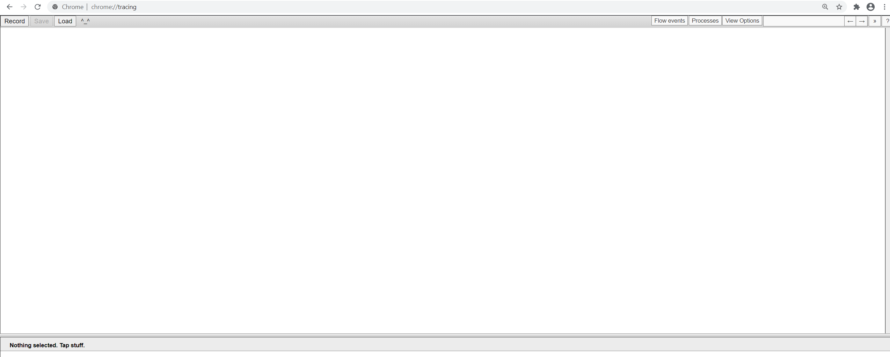
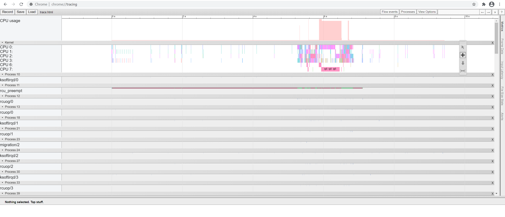
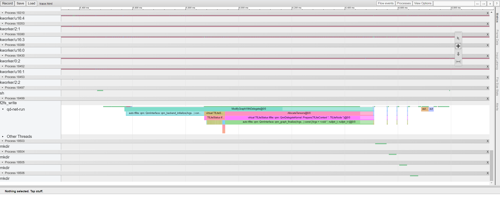
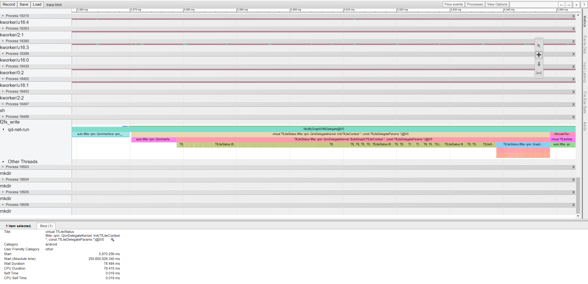

Tutorial #3: Analyzing Performance with Platform Tracing¶
This tutorial demonstrate how to obtain and view platform traces when running a model through the qtld-net-run application. For this example, the inception_v3_quant model will be used.
What is System Tracing¶
System Tracing (Systrace) is a mechanism for the Android Operating System to obtain a report of a device’s activity over a period of time, which includes the timing of different processes. To obtain a System Tracing report, the command line systrace tool from the Android SDK is utilized in conjunction with Android’s systrace API to generate custom traces within the |Qualcomm(R)| AI Engine Direct Delegate code. For more information on this, please see the Systrace Documentation.
Prerequisites¶
The following list of prerequisites must be met before starting this tutorial:
A Qualcomm device with an ADB connection.
Read the Overview and Setup pages to understand the different components of the |Qualcomm(R)| AI Engine Direct Delegate SDK.
An Android Software Development Kit (SDK) package, which contains the systrace python script. To use this script, all the prerequisites for said script also need to be satisfied. These prerequisites may be seen here: Systrace Prerequisites.
The ADB version used in the tutorial must be the version within the Android SDK on hand. To do this, enter the following commands in the terminal:
$ export PATH=<ANDROID_SDK_ROOT>/platform-tools/:$PATH $ # kill and update adb server to use new adb version: $ adb kill-server $ adb start-server
Note
This same ADB version must be used throughout all terminals used in this tutorial.
Setup¶
This tutorial will use the same inception_v3_quant model used in Tutorial qtld-net-run Setup to do platform tracing. It will also use the tools:qtld-net-run app to perform model inference with the Delegate.
Follow the instructions below to download the model and un-tar it. If you have already performed this setup, these commands can be skipped.
$ cd $QNN_DELEGATE_SDK_ROOT/examples/models/inception_v3_quant/
$ wget https://storage.googleapis.com/download.tensorflow.org/models/tflite_11_05_08/inception_v3_quant.tgz
$ tar -xvzf inception_v3_quant.tgz
There should be a file called inception_v3_quant.tflite in the directory. This is the model that will be used to run benchmarking.
Next, push the qtld-net-run application, the TFLite model, the model inputs, the |Qualcomm(R)| AI Engine Direct Delegate, and the backend libraries to the device using ADB.
$ adb shell mkdir -p /data/local/tmp/qnn_delegate/inception_v3_quant
$ adb push inception_v3_quant.tflite /data/local/tmp/qnn_delegate/inception_v3_quant/
$ adb push data /data/local/tmp/qnn_delegate/inception_v3_quant/
$ adb push input_list.txt /data/local/tmp/qnn_delegate/inception_v3_quant/
$ adb push $QNN_DELEGATE_SDK_ROOT/target/aarch64-android/bin/qtld-net-run /data/local/tmp/qnn_delegate/
$ adb push $QNN_DELEGATE_SDK_ROOT/target/aarch64-android/lib/libQnnHtp.so /data/local/tmp/qnn_delegate/
$ adb push $QNN_DELEGATE_SDK_ROOT/target/aarch64-android/lib/libQnnHtpPrepare.so /data/local/tmp/qnn_delegate/
$ adb push $QNN_DELEGATE_SDK_ROOT/target/aarch64-android/lib/libQnnHtpV68Stub.so /data/local/tmp/qnn_delegate/
$ adb push $QNN_DELEGATE_SDK_ROOT/target/hexagon-v68/lib/unsigned/libQnnHtpV68Skel.so /data/local/tmp/qnn_delegate/
Prior to using systrace, the following property must be set on the device, in order for TFLite to know it needs to use systrace to profile events:
$ adb shell "setprop debug.tflite.trace 1"
Note that this only needs to be done once per device restart. In addition, per op profiling cannot be used while this property is set.
Obtaining the Trace File¶
The systrace script only captures events within a certain time window. As a result, the desired application should run and complete before the systrace capture duration expires. The simplest way to ensure this is to use two terminals; one to run the systrace script and one to run qtld-net-run. Make sure to read the following section fully before running any commands.
Within a new terminal, do the following to run the systrace command-line tool. You should only paste these commands for now, and not run them yet, since the systrace tool uses a timer, and the qtld-net-run command must be run and completed within the allotted time.
$ # Go into the systrace directory
$ cd <ANDROID_SDK_ROOT>/platform-tools/systrace/
$ python systrace.py --time=10 --app=/data/local/tmp/qnn_delegate/qtld-net-run
Here, the time parameter is the amount of time that will be traced (in seconds), and app is the location of the app on device that is being traced (in this case, it is qtld-net-run). You may use the --help flag with this command to view other flags, such as how to change the location of the trace.html file.
In the original terminal, paste the following qtld-net-run command. Note that to enable system tracing within the delegate, the --tracing option needs to be used with qtld-net-run:
$ adb shell 'export LD_LIBRARY_PATH=/data/local/tmp/qnn_delegate/:$LD_LIBRARY_PATH &&
export ADSP_LIBRARY_PATH="/data/local/tmp/qnn_delegate/" &&
cd /data/local/tmp/qnn_delegate/inception_v3_quant/ &&
/data/local/tmp/qnn_delegate/qtld-net-run \
--model inception_v3_quant.tflite \
--input input_list.txt \
--output output \
--backend htp \
--tracing'
First run the systrace command in the second terminal, then run the above qtld-net-run command in the first terminal. Make sure it is completed before systrace finishes timing, so that it is included in the trace. Once the systrace.py timing has ended, a trace.html file should be located at <ANDROID_SDK_ROOT>/platform-tools/systrace/trace.html. This is the default save location.
Viewing the trace file¶
The trace file can be opened with various applications, but here the Chrome
1 browser will be used. Go into Google Chrome and type in
chrome://tracing. This should take you to the following page:

Click the “Load” button seen on the top left, and load your trace.html file that you obtained from section the previous section. This should display the traces, as seen below:

Scroll down and find the “qtld-net-run” process. This will show trace events from both the TFLite framework as well as the |Qualcomm(R)| AI Engine Direct Delegate.

To navigate this trace file (zoom in, zoom out, etc.) please refer to this document on how to do so: Navigate Trace Report.
Certain events may also be clicked to get a more detailed view of them:
